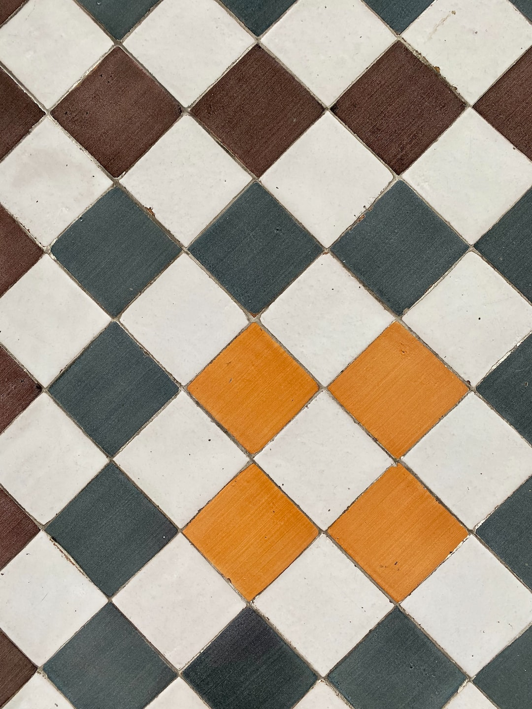

You can use most of the blend modes available in a design tool with
CSS, using the mix-blend-mode or the
background-blend-mode properties. The
mix-blend-mode applies blending to a whole element and
the background-blend-mode applies blending to the
background of an element.
Below we have image element inside div. The div element has pink background, and the image has transparent background, so you can see through it.
With use of
mix-blend-mode: multiply; filter: brightness(110%)
Below are images that will be used for presentation.
First picture will be shown on the pink background, the second picture will be dispalyed on top of the third picture.

There are two different types of blend modes: separable and non-separable.
Separable
Non-separable
First picture is inside element with pink background for presentation purposes, to see the effect. The second picture is two pictures stacked together, to see how it also mixes all sorts of shapes.